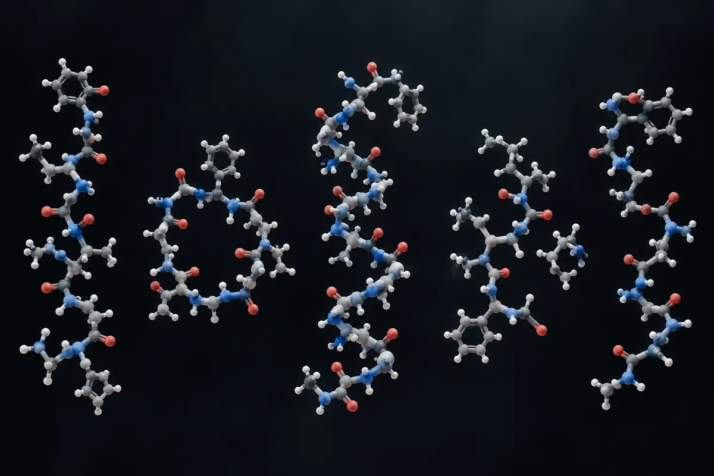

Ready-made blends — how much study the combination has
32 of the 33 blends sold ready-made have zero registered studies. 11 don't have even one article that cites the components together

Experimental material. Read before using anything from here.
Nothing on this page is a medical recommendation, prescription or treatment plan. It is an organized translation of protocols circulating in research communities and, where it exists, of what published trials tested. The two are marked differently — and they are not equivalent.
Most of the compounds here have no FDA approval for human use. Several are sold labeled "research use only", which means they have not gone through purity, sterility or dosage controls for human consumption. A community-reported dose is not a validated dose: it is what someone reported having done.
Talk to a licensed health professional before considering any of these compounds. If you already use one and feel anything unexpected, seek care — do not wait for the next routine test.
Summary
33 peptide mixtures listed as ready-made blends in a Brazilian store's library, from CJC-1295 with GHRP-2 to GHK-Cu with Matrixyl. For each one, the question is whether the combination exists in the literature and in trial registries — and the answer is almost always no.
The question a blend raises
A vial with two or three peptides mixed in claims, just by existing, that the combination was thought through. This page's question is whether it was studied: whether there is an article that discusses the molecules together, and whether there is a registered trial with both.
The method is deliberately generous. The query joins the components with AND — it is enough for an article to cite the names to enter the count, even if it tests nothing. That's why the number is a ceiling: a review article that cites BPC-157 in one paragraph and TB-500 in another counts as one. I read the titles and the publication type of every article returned, up to 30 per row, and summarize what they are in the last column.
A caveat that changes a whole row. gonadorelin on PubMed falls under the GnRH descriptor, the hormone the body itself produces, and the combination with kisspeptin returns 1,566 articles on the physiology of the reproductive axis. The 9 records on ClinicalTrials.gov are kisspeptin studies in delayed puberty, hypogonadism and physiology — judging by the titles, none tests a vial with the two molecules mixed.
No number on this page came from the site's secondary source.
The blends, one by one
The numbers below were gathered by me on October 5, 2026, on PubMed and ClinicalTrials.gov. Each row's query is written out in full, next to the number, so anyone can repeat it and contradict me — and so the script that rechecks this site's counts can run all of them.
| Blend sold ready-made | Query | Articles in PubMed | Studies on ClinicalTrials.gov | What the returned articles are |
|---|---|---|---|---|
| CJC-1295 DAC + GHRP-2 | ("CJC-1295" OR "CJC 1295") AND ("GHRP-2" OR pralmorelin) | 2 | 0 | one review and an anti-doping detection method in horses |
| Sermorelin + Ipamorelin | (sermorelin) AND (ipamorelin) | 5 | 0 | reviews on peptides and doping |
| AOD-9604 + 5-Amino-1MQ | ("AOD-9604" OR AOD9604) AND ("5-amino-1MQ" OR "5-amino-1-methylquinolinium") | 0 | 0 | — |
| MOTS-c + NAD+ | ("MOTS-c" OR MOTSc) AND ("nicotinamide adenine dinucleotide" OR NAD) | 2 | 0 | two studies that measure markers in blood vesicles, without administering anything |
| Epitalon + DSIP | (epitalon OR epithalon OR "AEDG peptide") AND ("delta sleep-inducing peptide" OR DSIP) | 3 | 0 | one review and Russian studies in mice and in cancer prevention |
| Thymosin alpha-1 + BPC-157 | ("thymosin alpha 1" OR thymalfasin) AND ("BPC-157" OR "BPC 157") | 1 | 0 | one review |
| TB-500 + GHK-Cu | ("TB-500" OR "thymosin beta 4" OR "thymosin beta-4") AND ("GHK-Cu" OR "GHK copper") | 6 | 0 | reviews of sports and regenerative medicine |
| IGF-1 LR3 + PEG-MGF | ("IGF-1 LR3" OR "LR3 IGF-1" OR "LR3-IGF-I") AND ("PEG-MGF" OR "mechano growth factor") | 1 | 0 | one review |
| PT-141 + Kisspeptin | (bremelanotide OR "PT-141") AND (kisspeptin) | 0 | 0 | — |
| BPC-157 + GHK-Cu + KPV | ("BPC-157" OR "BPC 157") AND ("GHK-Cu" OR "GHK copper") AND ("Lys-Pro-Val" OR "KPV peptide" OR "KPV tripeptide") | 0 | 0 | — |
| BPC-157 + KPV + Larazotide | ("BPC-157" OR "BPC 157") AND ("Lys-Pro-Val" OR "KPV peptide" OR "KPV tripeptide") AND (larazotide) | 0 | 0 | — |
| CJC-1295 + Ipamorelin + GHRP-2 | ("CJC-1295" OR "CJC 1295") AND (ipamorelin) AND ("GHRP-2" OR pralmorelin) | 2 | 0 | one review and an anti-doping detection method in horses |
| IGF-1 LR3 + BPC-157 | ("IGF-1 LR3" OR "LR3 IGF-1" OR "LR3-IGF-I") AND ("BPC-157" OR "BPC 157") | 0 | 0 | — |
| Follistatin-344 + ACE-031 | (follistatin) AND ("ACE-031" OR ramatercept) | 1 | 0 | one Japanese review on anti-myostatin antibodies |
| Hexarelin + CJC-1295 | (hexarelin) AND ("CJC-1295" OR "CJC 1295") | 2 | 0 | one review and an anti-doping detection method in horses |
| MK-677 + Ipamorelin | (ibutamoren OR "MK-677" OR "MK-0677") AND (ipamorelin) | 6 | 0 | reviews, chemistry of hybrid molecules and one study in female rats with ipamorelin and GHRP-6 |
| Tirzepatide + BPC-157 | (tirzepatide) AND ("BPC-157" OR "BPC 157") | 3 | 0 | reviews on biohacking and the compounded-drug market |
| Semaglutide + MOTS-c | (semaglutide) AND ("MOTS-c" OR MOTSc) | 1 | 0 | one study of maternal obesity in an animal model |
| Survodutide + Cagrilintide | (survodutide) AND (cagrilintide) | 10 | 0 | reviews of obesity drugs, which cite the two molecules separately |
| AOD-9604 + L-carnitine + 5-Amino-1MQ | ("AOD-9604" OR AOD9604) AND (carnitine OR levocarnitine) AND ("5-amino-1MQ" OR "5-amino-1-methylquinolinium") | 0 | 0 | — |
| MOTS-c + SS-31 + NAD+ | ("MOTS-c" OR MOTSc) AND (elamipretide OR "SS-31") AND ("nicotinamide adenine dinucleotide" OR NAD) | 0 | 0 | — |
| SHLP-2 + Humanin + MOTS-c | ("SHLP2" OR "SHLP-2" OR "small humanin-like peptide 2") AND (humanin) AND ("MOTS-c" OR MOTSc) | 8 | 0 | reviews and studies that measure the mitochondrial peptides, without administering the combination |
| Epitalon + GHK-Cu | (epitalon OR epithalon OR "AEDG peptide") AND ("GHK-Cu" OR "GHK copper") | 2 | 0 | reviews |
| NAD+ + 5-Amino-1MQ | ("nicotinamide adenine dinucleotide" OR NAD) AND ("5-amino-1MQ" OR "5-amino-1-methylquinolinium") | 1 | 0 | one cancer study on the NNMT enzyme |
| Klotho + Epitalon | (klotho) AND (epitalon OR epithalon OR "AEDG peptide") | 0 | 0 | — |
| N-acetyl Semax amidate + N-acetyl Selank amidate | ("N-acetyl semax" OR "NA-Semax" OR "semax amidate") AND ("N-acetyl selank" OR "NA-Selank" OR "selank amidate") | 0 | 0 | — |
| Semax + Selank + BPC-157 | (semax) AND (selank) AND ("BPC-157" OR "BPC 157") | 1 | 0 | one review |
| Cerebrolysin + Semax | (cerebrolysin) AND (semax) | 3 | 0 | one Russian review, one study in rat cells and one Semax study in stroke that cites Cerebrolysin |
| Dihexa + P021 | (dihexa) AND ("P021") | 0 | 0 | — |
| PT-141 + Oxytocin | (bremelanotide OR "PT-141") AND (oxytocin) | 6 | 0 | reviews of sexual dysfunction and one study in rabbit tissue |
| Kisspeptin + Gonadorelin | (kisspeptin) AND (gonadorelin) | 1.566 | 9 | physiology of the reproductive axis — see the caveat at the top of the page |
| GHK-Cu + Matrixyl synthe'6 + Syn-Coll | ("GHK-Cu" OR "GHK copper") AND ("palmitoyl tripeptide-38") AND ("palmitoyl tripeptide-5" OR "Syn-Coll") | 0 | 0 | — |
| Glutathione + GHK-Cu | (glutathione) AND ("GHK-Cu" OR "GHK copper") | 7 | 0 | copper chemistry studies, with no use in people |
Where the numbers don't add up
- 32 of the 33 blends have zero registered studies on ClinicalTrials.gov. The only one that isn't zero is kisspeptin with gonadorelin, for the reasons in the caveat above.
- 11 of the 33 don't have even one article that cites the components together. Among them, the "fat-oxidation triple" (AOD-9604, L-carnitine and 5-Amino-1MQ), the "mitochondrial triple" (MOTS-c, SS-31 and NAD+) and the gut-barrier protocol (BPC-157, KPV and larazotide).
- In the others, what shows up is reviews. Of the articles that cite the components together, none, judging by the title, is a trial that gave the combination to people and measured the result.
- A blend is not a sum. Two unstudied peptides mixed in one vial don't become a product with twice the evidence: they become a product with none, plus the uncertainty of how the two behave together in the same solution.
The blends this site already had
These were on the store's list and already had a page here: BPC-157 + TB-500, CJC-1295 + ipamorelin, tesamorelin + ipamorelin, tirzepatide + cagrilintide, semaglutide + cagrilintide, retatrutide + cagrilintide, Semax + Selank, KLOW and GLOW (BPC-157 + TB-500 + GHK-Cu). Matrixyl 3000, which the store lists as a blend, is on the cosmetic peptides page.